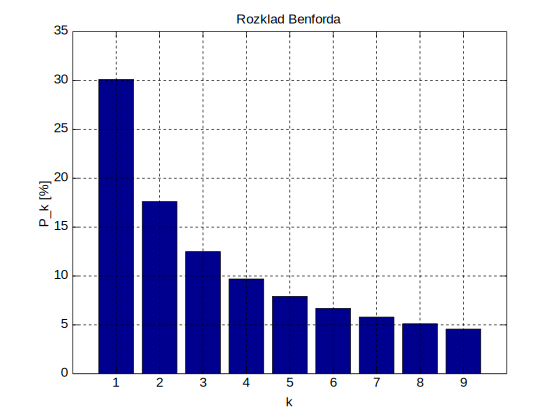

# Index
- [Test Page](test-page.html)
## Technical Topics
- [Mathematical Notation](tech-math-notation.html)
- [Algorithms](tech-algorithms.html)
- [Data Structures](tech-datastructures.html)
- [Linear Algebra](tech-linear-algebra.html)
- [Coordinate Systems](tech-coordinate-systems.html)
- [Optimization](tech-optimization.html)
- [Geometry](tech-geometry.html)
- [Physics](tech-physics.html)
- [Motion Models](tech-motion-models.html)
- [Control](tech-control.html)
- [Probability and Stochastic](tech-probability-stochastic.html)
- [Signal-Processing](tech-signal-processing.html)
- [Gain-Filter / Exponential Weighted Moving Average](tech-gain-filter.html)
- [Kalman-Filter](tech-kalman-filter.html)
- [Particle Filter](tech-particle-filter.html)
- [Evolutionary Algorithms](tech-evolutionary-algorithms.html)
- [Image Capturing](tech-image-capturing.html)
- [Image-Processing](tech-image-processing.html)
## Development and Software
### Online tools
- Online compiler [C++ shell](http://cpp.sh/) is very useful for small C++ tests à la "hm I wonder if this C++ construct would compile, let's check"
- Online compiler [godbolt](https://godbolt.org/) compiles many Languages (Analysis, Assembly, C, C++, Cppx, CUDA, D, Go, Haskell, ispc, LLVM IR, Pascal, Rust, Swift) and lets you inspect generated assembly for various compilers and targets directly in browser
- Latex in Browser [Overleaf](https://www.overleaf.com/)
- Draw symbol and get corresponding latex code with [Detexify](http://detexify.kirelabs.org/classify.html)
- Draw symbol and find corresponding unicode characters with [Shapecatcher](http://shapecatcher.com/)
## Patterns, Concepts, Laws
- [Gordon Branders bag of tricks / patterns](http://gordonbrander.com/pattern/)
- [Modularize later](http://gordonbrander.com/pattern/modularize-later/)
- [Wikipedia List of eponymous laws](https://en.wikipedia.org/wiki/List_of_eponymous_laws) <br />
This list of eponymous laws provides links to articles on laws, principles, adages, and other succinct observations or predictions named after a person.
Some honorable mentions:
- [Amdahl's law](https://en.wikipedia.org/wiki/Amdahl%27s_law) <br />
In computer architecture, Amdahl's law (or Amdahl's argument) is a formula which gives the theoretical speedup in latency of the execution of a task at fixed workload that can be expected of a system whose resources are improved, e.g. by parallelizing. <br />
$\frac{1}{(1-p)+\frac{p}{s}}$ computes the speedup of the whole task, where $s$ is the speedup of the part of the task that benefits from improved system resources and $p$ is the proportion of execution time that the part benefiting from improved resources originally occupied
- The [Three Laws of Robotics](https://en.wikipedia.org/wiki/Three_Laws_of_Robotics) formulated by Isaac Asimov: <br />
- A robot may not injure a human being or, through inaction, allow a human being to come to harm.
- A robot must obey the orders given it by human beings, except where such orders would conflict with the First Law.
- A robot must protect its own existence as long as such protection does not conflict with the First or Second Laws.
- [Benford's law](https://en.wikipedia.org/wiki/Benford%27s_law): In any collection of statistics, a given statistic has roughly a 30% chance of starting with the digit 1: 
- [Campbell's law](https://en.wikipedia.org/wiki/Campbell%27s_law): The more any quantitative social indicator is used for social decision making, the more subject it will be to corruption pressures and the more apt it will be to distort and corrupt the social processes it is intended to monitor. Also see Goodhart's law
- [Conway's law](https://en.wikipedia.org/wiki/Conway%27s_law): Any piece of software reflects the organizational structure that produced it.
- [Dunning–Kruger effect](https://en.wikipedia.org/wiki/Dunning%E2%80%93Kruger_effect) is a cognitive bias in which unskilled individuals suffer from illusory superiority, mistakenly rating their ability much higher than average. This bias is attributed to a metacognitive inability of the unskilled to recognize their mistakes.
- [Gall's law](https://en.wikipedia.org/wiki/Gall%27s_law): "A complex system that works is invariably found to have evolved from a simple system that worked."
- [Goodhart's law](https://en.wikipedia.org/wiki/Goodhart%27s_law): When a measure becomes a target, it ceases to be a good measure. Also see Campbell's law
- [Hebb's law](https://en.wikipedia.org/wiki/Donald_O._Hebb#Work): "Neurons that fire together wire together.". Also see [Hebbian theory](https://en.wikipedia.org/wiki/Hebbian_theory)
- [Heisenberg's uncertainty principle](https://en.wikipedia.org/wiki/Uncertainty_principle): one cannot measure values (with arbitrary precision) of certain conjugate quantities, which are pairs of observables of a single elementary particle. The most familiar of these pairs is position and momentum.
- [Hofstadter's law](https://en.wikipedia.org/wiki/Hofstadter%27s_law): "It always takes longer than you expect, even when you take into account Hofstadter's law" The law is a statement regarding the difficulty of accurately estimating the time it will take to complete tasks of substantial complexity. The recursive nature of the law is a reflection of the widely experienced difficulty of estimating complex tasks despite all best efforts, including knowing that the task is complex.
- [Humphrey's law](https://en.wikipedia.org/wiki/Humphrey%27s_law): conscious attention to a task normally performed automatically can impair its performance
- [Kerckhoffs's principle](https://en.wikipedia.org/wiki/Kerckhoffs%27s_principle) of secure cryptography: A cryptosystem should be secure even if everything about the system, except the key, is public.
- [Landauer's principle](https://en.wikipedia.org/wiki/Landauer%27s_principle): there is a minimum possible amount of energy required to change one bit of information, known as the Landauer limit. Another way of phrasing Landauer's principle is that if an observer loses information about a physical system, the observer loses the ability to extract work from that system.
- [Leibniz's law](https://en.wikipedia.org/wiki/Identity_of_indiscernibles) is a principle in metaphysics also known as the Identity of Indiscernibles. It states: "If two objects have all their properties in common, then they are one and the same object."
- [Liebig's law of the minimum](https://en.wikipedia.org/wiki/Liebig%27s_law_of_the_minimum): The growth or distribution of a plant is dependent on the one environmental factor most critically in demand.
- [Mandela effect](https://en.wikipedia.org/wiki/False_memory#Commonly_held_false_memories) In 2010 the phenomenon of collective false memory was dubbed the "Mandela effect" by self-described "paranormal consultant" Fiona Broome, in reference to a false memory she reports, of the death of South African leader Nelson Mandela in the 1980s (when he was in fact still alive), which she claims is shared by "perhaps thousands" of other people.
- [Menzerath's law](https://en.wikipedia.org/wiki/Menzerath%27s_law), or Menzerath–Altmann law (named after Paul Menzerath and Gabriel Altmann), is a linguistic law according to which the increase of a linguistic construct results in a decrease of its constituents, and vice versa.
- [Miller's law](https://en.wikipedia.org/wiki/Miller%27s_law), in communication: "To understand what another person is saying, you must assume that it is true and try to imagine what it could be true of."
- [Moore's law](https://en.wikipedia.org/wiki/Moore%27s_law) is an empirical observation stating that the complexity of integrated circuits doubles every 24 months. Outlined in 1965 by Gordon Moore, co-founder of Intel Corporation.
- [Murphy's law](https://en.wikipedia.org/wiki/Murphy%27s_law): Anything that can go wrong will go wrong. Opposite of Yhprum's law
- [Naismith's rule](https://en.wikipedia.org/wiki/Naismith%27s_rule) is a rule of thumb that helps in the planning of a walking or hiking expedition by calculating how long it will take to walk the route, including ascents. A modern version can be formulated as follows: "Allow one hour for every 5 km (3 miles) forward, plus an additional hour for every 600 m (2000 feet) of ascent."
- [Newton's flaming laser sword](https://en.wikipedia.org/wiki/Newton%27s_flaming_laser_sword), also known as Alder's razor: What cannot be settled by experiment is not worth debating.
- [Occam's razor](https://en.wikipedia.org/wiki/Occam%27s_razor): explanations should never multiply causes without necessity. ("Entia non sunt multiplicanda praeter necessitatem.") When two or more explanations are offered for a phenomenon, the simplest full explanation is preferable.
- [Pareto principle](https://en.wikipedia.org/wiki/Pareto_principle): for many phenomena 80% of consequences stem from 20% of the causes.
- [Parkinson's law](https://en.wikipedia.org/wiki/Parkinson%27s_law): "Work expands to fill the time available for its completion." Corollary: "Expenditure rises to meet income."
- [Peter principle](https://en.wikipedia.org/wiki/Peter_principle): "In a hierarchy, every employee tends to rise to his level of incompetence."
- [Poisson's law of large numbers](https://en.wikipedia.org/wiki/Poisson%27s_law_of_large_numbers): For independent random variables with a common distribution, the average value for a sample tends to the mean as sample size increases.
- [Rent's rule](https://en.wikipedia.org/wiki/Rent%27s_rule): In computing logic, the relationship between the number of external signal connections to a logic block (i.e., the number of "pins") with the number of logic gates in the logic block is a power-law relation (straight line on log-log-plot).
- [Shirky principle](https://en.wikipedia.org/wiki/Shirky_principle): "Institutions will try to preserve the problem to which they are the solution."
- [Streisand effect](https://en.wikipedia.org/wiki/Streisand_effect): Any attempt to hide, remove, or censor a piece of information has the unintended consequence of publicizing the information more widely.
- [Sturgeon's law](https://en.wikipedia.org/wiki/Sturgeon%27s_law): "Ninety percent of everything is crud."
- [Vierordt's law](https://en.wikipedia.org/wiki/Vierordt%27s_law), states that, retrospectively, "short" intervals of time tend to be overestimated, and "long" intervals of time tend to be underestimated. Related quote from Bill Gates: "Most people overestimate what they can do in one year and underestimate what they can do in ten years."
- [Wirth's law](https://en.wikipedia.org/wiki/Wirth%27s_law): Software gets slower more quickly than hardware gets faster.
- [Yhprum's law](https://en.wikipedia.org/wiki/Yhprum%27s_law): "Everything that can work, will work" or "Sometimes systems that should not work, work nevertheless". Opposite of Murphy's law
- [Zipf's law](https://en.wikipedia.org/wiki/Zipf%27s_law) in linguistics, is the observation that the frequency of use of the nth-most-frequently-used word in any natural language is approximately inversely proportional to n, or, more simply, that a few words are used very often, but many or most are used rarely. More generally, the term Zipf's law refers to the probability distributions involved, which is applied by statisticians not only to linguistics but also to fields remote from that. See also [Zipf–Mandelbrot law](https://en.wikipedia.org/wiki/Zipf%E2%80%93Mandelbrot_law).
## web links to useful documentation
- [Sublime Text Syntax Definitions ](https://www.sublimetext.com/docs/3/syntax.html)
[Back to top](#)